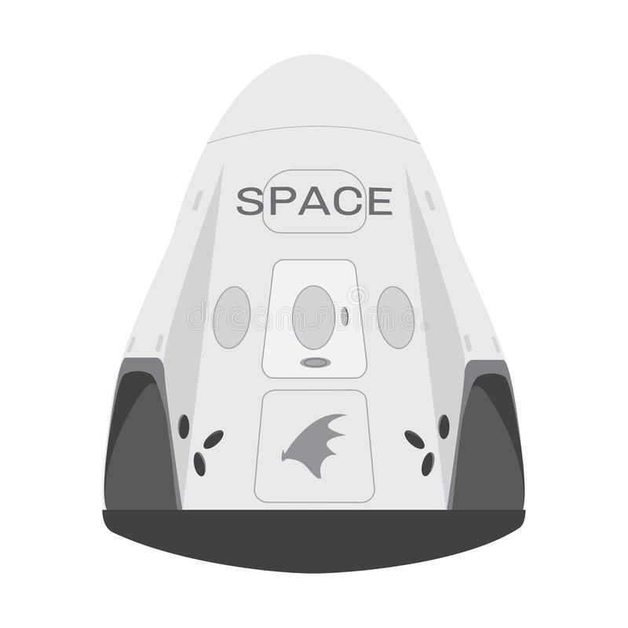

Hyperblog
tu blog
de cabecera
Aquí inicia la historia de un gran proyecto
Y este es el párrafo de inicio donde vamos a explicar las cosas increíbles que se pueden hacer con ramas

los blogs son la mejor manera de compartir informacion y tus ideas. Mucho mas que ir a conferencias o salir en Youtube. excepto si eres un rockstar. pero estadisticamente no lo eres.... por ahora.
suscribete y dale like